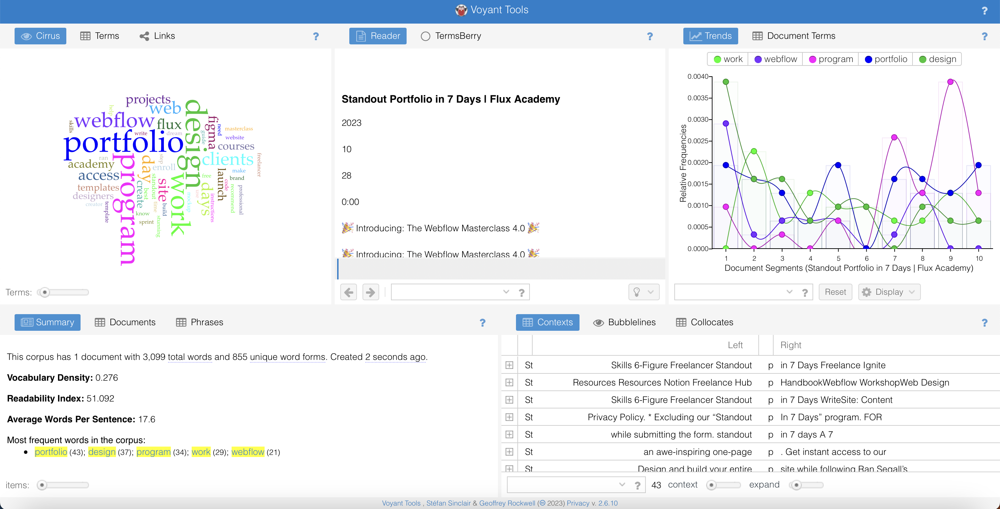
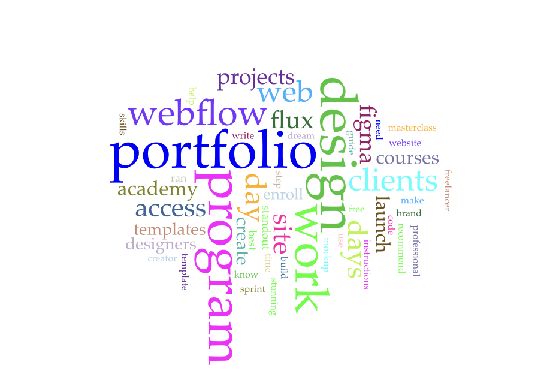
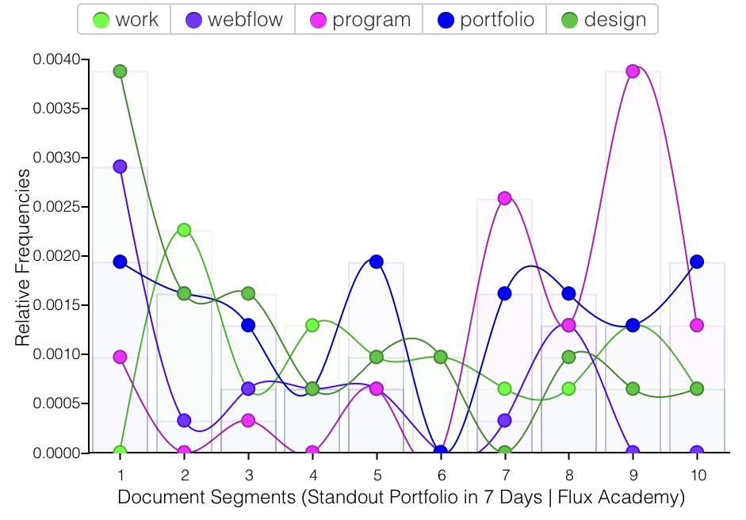
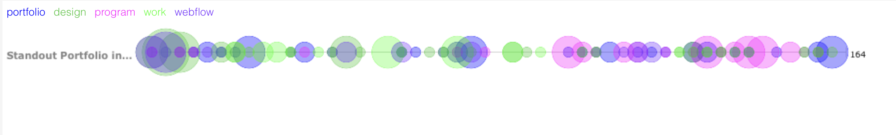

In this task, I have read and considered the following professional writing characteristics:
Reviewing them helped me realise the ways I can successfully deliver my messages to the website users.
For this task, I have selected the Flux Academy’s website. It is a website that has a similar purpose to my website - to educate designers on how to effectively build websites. Here’s a link to the website.
Evaluating Flux Academy’s website against the fourteen professional writing characteristics:
Another thing that I will take into consideration when creating my website’s content is the Awe writing process. Three are the steps I need to follow. The first step is to Assess. This includes defining the audiences, defining the purpose, conducting research, which I already did, and organising, categorising & and outlining. The second step is to write - creating a draft and reading and revising. The last step is to edit my text. It involves checking for correctness and organisation and editing paragraphs and sentence levels.
In this task, I selected Flux’s ‘Standout portfolio in 7 days’ page for analysis with the volant tools.
First, I inserted the link and pressed “reveal”.
My findings: This corpus has 1 document with 3,099 total words and 855 unique word forms. The most frequent words in the corpus are portfolio (43); design (37); program (34); work (29); and webflow (21). This page is about teaching people how Ito build their portfolio website, hence the high use of the words portfolio (43); design (37); and program (34) is understandable. It tends to catch the attention of the users.
Here are the results presented in the different tabs:
Cirrus tab:
Trends tab:
Bubblelines tab:
Part three: I believe that the combination of both the il activity and the work with the volant tools was helpful for the analysis of my resources. I’m planning on using both ways of analysis for my actual website.
You can navigate to the Introduction to AI section, and find my first samples of text.
If you follow the link I provided, it will take you to my first section which contextualises my topic. I am planning to include this opening statement in the first AI lesson on my website. With it, I believe that I have met the professional writing characteristics. I’ve paid attention to accuracy and used active voice. However, when explaining complex concepts based on academic sources, I may need to utilise the passive voice. I avoided biases, and negative tone at all times and tried to use recognisable words while avoiding wordiness. The language I used was simple and my paragraphs are short, at least, I tried to simplify it. I will continue to follow professional writing characteristics when building the final version of my website.